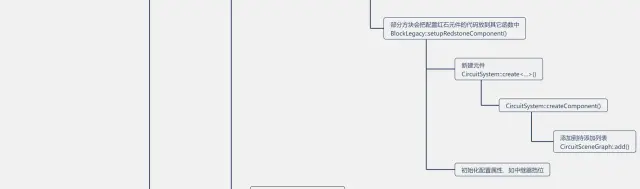
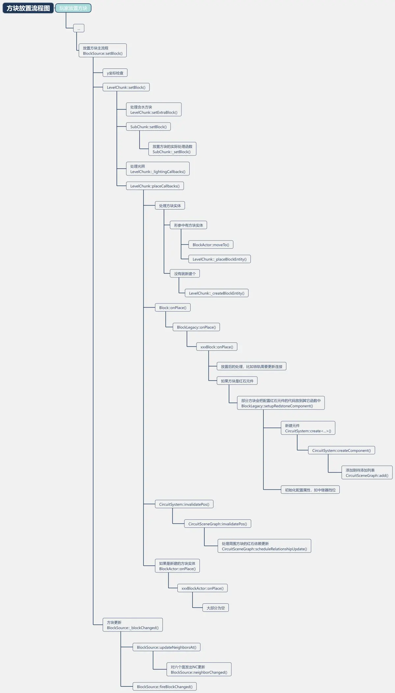

当玩家或命令方块等放置方块时，游戏会通过 BlockSource::setBlock() 函数完成放置流程。
bool BlockSource::setBlock(
const BlockPos &pos,
const Block &block,
int updateFlags,
std::shared_ptr<BlockActor> blockEntity,
const ActorBlockSyncMessage *syncMsg,
Actor *blockChangeSource
);BlockSource::setBlock()
首先检查 y 坐标，也就是高度限制。然后找到方块所在区块，调用区块的函数 LevelChunk::setBlock()，由该区块完成方块的放置。
const Block &LevelChunk::setBlock(
const ChunkBlockPos &pos,
const Block &block,
BlockSource *issuingSource,
std::shared_ptr<BlockActor> blockEntity
);之后调用 BlockSource::_blockChanged()，完成方块更新。
void BlockSource::_blockChanged(
const BlockPos &pos,
uint32_t layer,
const Block &block,
const Block &previousBlock,
int updateFlags,
const ActorBlockSyncMessage *syncMsg,
Actor* blockChangeSource
);LevelChunk::setBlock()
该函数会先真正放置下方块，同时会完成含水方块的处理。
然后会更新光照，配置方块实体并插入到本区块的方块实体列表中。
接下来调用方块的 onPlace() 函数，由其完成自身的一些更新，比如铁轨的连接；如果自己属于红石元件，也会在这里创建红石元件，添加到红石系统的待添加列表中，并初始化红石设置，比如中继器挡位。
virtual void xxxBlock::onPlace(
BlockSource &region,
const BlockPos &pos
) const;最后调用红石系统的 CircuitSystem::invalidatePos() 函数，处理该方块对周围电路的影响。
void CircuitSystem::invalidatePos(const BlockPos &pos);BlockSource::_blockChanged()
该函数内会依次调用六个面的方块的`neighborChanged()`函数，也就是广为人知的 NC 更新。观察者通过此函数检测方块更新。
六个面的更新顺序为：西 东 南 北 上 下
CircuitSystem::invalidatePos()
如果自己是红石元件，将自身所有信号源添加到待更新列表中。
如果不是，检查周围六个面是否是红石元件，如果是将其添加到待更新列表中。
然后将该元件的所有信号源添加到待更新列表中。
六个面的遍历顺序与前面不同，为：下 上 北 南 西 东
注意！！：只有生产者和电容器能被添加到待更新列表中，其它类型元件会被直接跳过。
